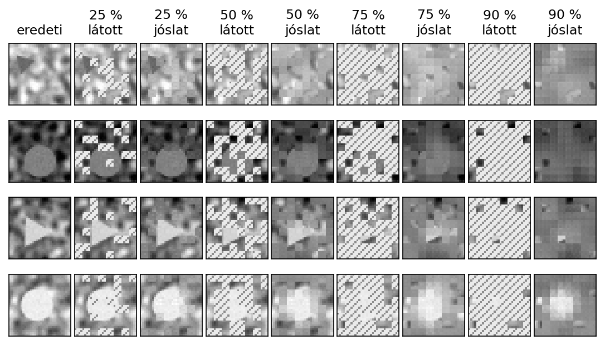

Az alakzat-adatkészletben a címke ingyen van, mert mi generáljuk a képeket. Valódi feladatnál fordított a helyzet: képből rengeteg van, a címkét viszont embernek kell megadnia, dobozonként vagy pixelenként. Képzeld el, hogy képed van, de csak címkéd. Egy felügyelt kis CNN ennyi címkéből (a „Kód” rész mérése, három mag átlaga) a validációs képek mindössze kb. %-át osztályozza jól, alig többet a véletlen %-nál, miközben címkével kb. %-ot ér el.
Mit kezdhetünk a maradék címkézetlen képpel? Az önfelügyelt tanulás (self-supervised learning) olyan tanítófeladatot készít, amelynek a helyes válaszát maga a kép tartalmazza. A háló közben jellemzőket tanul, amelyeket utána kevés címkével hasznosítunk. Ebben az alfejezetben a kontrasztív tanulást (SimCLR, InfoNCE), a tanító–tanuló módszert (DINO) és a maszkolásos képmodellezést (MAE) nézzük meg, kettőt NumPy-ban be is tanítunk, és őszintén lemérjük, mit ér a tanult reprezentáció.
Az első önfelügyelt módszerek kézzel kitalált előfeladatokat (pretext task) adtak a hálónak:
Az ilyen feladat csak akkor tanít hasznosat, ha a megoldásához tényleg a tartalom kell. A mi alakzatainknál a forgatásnak nincs helyes válasza (a kép nem „áll” sehogy), vagyis a feladat semmit nem tanítana. A mai módszerek két általánosabb ötletre épülnek:
Az első ötletet jól mutatja egy gömb. A beágyazásokat egységhosszúra normáljuk, így mindegyik egy gömbfelület pontja. A tanítás a pozitív párokat (ugyanannak a képnek a két nézetét) egymáshoz húzza, a negatív párokat eltolja.
Az ábra játékfeladat: nyolc „kép” rejtett tartalma nyolc szám, mindegyikből két zajos nézet készül, a kódoló pedig egyetlen lineáris leképezés. A felső sorban a párok néhány lépés alatt összezárulnak, a nyolc pár pedig egyenletesen szétterül. Az alsó sorban csak vonzás van: a párok itt is összezárulnak, de végül mindegyik pont ugyanoda kerül. A veszteség nulla, a reprezentáció használhatatlan: ez az összeomlás (collapse).
Jelöljük az kódolót (itt a kis CNN a fej nélkül, jellemző), a rá épülő kis vetítőfejet (projector, kétrétegű MLP) és a normált beágyazást , . Egy képes mini-batch minden képéből két nézetet készítünk; az -edik kép beágyazásai és .
Definíció. Az InfoNCE-veszteség az -edik horgonyra, jelölt () közül:
Szavakban:
osztályú osztályozás, amelyben a „helyes osztály” a saját pár. A logit a
koszinusz-hasonlóság (egységvektorok skalárszorzata) osztva a
hőmérséklettel, a veszteség a Képosztályozás tanulási feladatként
keresztentrópiája. A szimmetrikus változat a sorokon és
az oszlopokon számolt veszteség átlaga
(
horgonyokra is). Az nn.info_nce ezt számolja.
A SimCLR [S-SIMCLR] veszteségében
(NT-Xent, nn.nt_xent) mind a
nézet horgony, a jelöltek pedig az összes többi
vektor; a pozitív pár egyetlen közülük. A tanítás után a
vetítőfejet eldobjuk, és a
kimenetét használjuk: a vetítőfej „elnyeli” azokat az invarianciákat,
amelyeket a veszteség kikényszerít, a mélyebb jellemző több információt
őriz meg.
Írjuk fel a veszteséget a pontszámokkal:
A második tag szerinti deriváltja a softmax-valószínűség, . A láncszabállyal, :
Szavakban: a gradiensmódszer (a negatív gradiens irányába lépve) a horgonyt a pozitív pár felé húzza, és eltolja a jelöltek -vel súlyozott átlagától. A nagy súlyú, vagyis a horgonyhoz hasonló negatívok (nehéz negatívok) taszítanak a legerősebben. Mivel a egységhosszú, a normáláson átterjesztve a gradiensből csak az érintősík irányú komponens marad.
A hőmérséklet szerepe. Kis -nál a softmax a leghasonlóbb jelöltre koncentrál: a tanítás szinte csak a legnehezebb negatívval foglalkozik, és a gradiens nagysága az szorzó miatt is megnő, a lépések rángatóvá válhatnak. Nagy -nál a súlyok közel egyenletesek: minden negatív egyformán taszít, a nehezek nem kapnak külön figyelmet. A gyakorlati értékek –; a legjobb érték feladatfüggő.
A batchméret szerepe. A negatívok száma . Összeomlott (minden képre azonos) kimenetnél minden pontszám egyforma, így a veszteség : ez a „véletlen szint”, amihez a mért veszteséget hasonlítani kell. Nagyobb batch több és változatosabb negatívot ad, ezért a SimCLR nagy batchmérettel dolgozik [S-SIMCLR]; a memóriaigény viszont nő, a hasonlósági mátrix .
A kontrasztív veszteség egyetlen dolgot követel: a két nézet legyen felismerhetően ugyanaz. A háló bármit felhasználhat erre, ami a két nézetben közös. Amit a bővítés megváltoztat, arra a jellemző invariánssá válik; amit nem változtat meg, azt a háló szabadon kihasználhatja, akkor is, ha minket nem érdekel.
A mi adatkészletünkben ez konkrét csapda: minden kép háttértextúrája egyedi. A kivágás, tükrözés, fényerő- és zajbővítés után is megmarad a háttér mintázata, amely sokkal nagyobb területű, mint az alakzat. A háló megoldhatja a feladatot a háttér alapján, és az alakzatról alig tanul valamit. Ezt a jelenséget rövidítésnek (shortcut) hívják. Négy változatot tanítunk be, és összevetjük:
| Változat | Nézetek |
|---|---|
| alap | nn.augment_views: kivágás, tükrözés, fényerő–kontraszt,
zaj |
| erős | a nyolc szimmetria (tükrözés és -os forgatás), kivágás, erős fényerő–kontraszt, zaj |
| háttércsere | az erős bővítés, de a két nézet hátterét kicseréljük (az alakzat helye és formája marad) |
| csak vonzás | az erős bővítés, negatívok nélkül
(nn.positive_only_loss) |
A háttércsere a maszkot, vagyis címkét használ, ezért valódi, címkézetlen adaton nem megvalósítható; itt azt mutatja meg, mi történik, ha a rövidítés nem elérhető. Valós adaton ehhez hasonlót a bővítés gondos megtervezésével (például erős kivágással és színtorzítással) lehet elérni.
A pozitív párok vonzása önmagában nem elég: a konstans kimenet tökéletes „megoldás”. Három ismert ellenszer:
nn.ema_update), és a tanító felé nem folyik
gradiens.Itt
és
a tanító és a tanuló logitjai ugyanannak a képnek két nézetére,
a tanító kimenetek mozgóátlaga (centrum),
.
Szavakban: a tanító adja a célt, a tanuló keresztentrópiával követi. A
centrálás akadályozza, hogy egyetlen dimenzió mindig
győzzön, az élesítés (kis
)
akadályozza, hogy a cél egyenletes eloszlássá lapuljon. A kettő
külön-külön összeomláshoz vezet, együtt egyensúlyt tart (a „Kód” rész
egy kis számpéldán mutatja). A DINO-ban a tanuló kis, helyi kivágásokat
is kap, a tanító csak nagyokat; ViT-tel tanítva a figyelmi térképek
látványosan a tárgyakra rajzolódnak [S-DINO]. A módszert itt nem
tanítjuk be; a nn.dino_loss és a
nn.update_center az építőkövek.
A maszkolásos autokódoló (masked autoencoder, MAE) [S-MAE] más úton jár: nem két nézetet hasonlít, hanem a hiányzó részt jósolja.
ahol
az eltakart foltok halmaza,
a jóslat. Szavakban: ami látszik, azt nem jutalmazzuk, csak a kitalált
rész számít. A magas maszkarány azért fontos, mert a szomszédos foltok
nagyon hasonlók: ha csak keveset takarnánk el, interpolációval, a
tartalom megértése nélkül is jól lehetne tippelni. Az aszimmetrikus
felépítés (nagy kódoló kevés tokennel, kis dekódoló sok tokennel) a
számítást csökkenti [S-MAE]. A nn.TinyMAE ennek a
kicsinyített változata:
-es
kép,
-es
folt, kétblokkos kódoló, egyblokkos dekódoló.

Az ábra felső sorában látszik, hogy a háló a hiányzó helyekre sima, a környezet átlagos világosságát követő foltokat ír: a háttér finom textúráját nem lehet kitalálni, a négyzetes hiba pedig ilyenkor az átlagot jutalmazza.
Az önfelügyelt tanítás veszteségéből nem látszik, mennyire hasznos a jellemző. Három szokásos mérés:
nn.linear_probe).nn.knn_predict).Két kötelező kontroll. Véletlen súlyú kódoló
ugyanilyen próbával (a batch-norm statisztikáit az adaton előbb
beállítva, nn.calibrate_batchnorm): a véletlen konvolúciók
is hordoznak információt, ehhez képest mérjük a hasznot.
Felügyelt tanítás ugyanannyi címkével: ha az
önfelügyelt út ezt nem veri meg, a címkézetlen adat ebben a beállításban
nem segített.
A jellemzőtér t-SNE vagy UMAP ábrája szemléletes, de óvatosan olvasd: ezek a módszerek a szomszédságokat őrzik meg, a csoportok közti távolságok és a csoportméretek nem mérvadók, az eredmény paraméter- és magfüggő. Következtetést számszerű mérésre alapozz.
Továbbvitt eredmény. Az InfoNCE-veszteséget és a
lineáris próbát (nn.info_nce, nn.linear_probe)
a Kép és szöveg: CLIP és nyílt szótáras látás,
a Tanult jellemzőpontok és illesztés és az Metrikák: PR-görbe, AP/mAP, mIoU és kalibráltság
alfejezet használja; az önfelügyelt előtanítás mint jellemzőforrás a Tanult jellemzőpontok és illesztés és az Adatkészletek, annotáció és eloszláseltolódás
témája.
Három horgony és három jelölt a 2D egységkörön, ; az -edik jelölt az -edik horgony pozitív párja:
| 1 | ||
| 2 | ||
| 3 |
Pontszámok (), exponenciálisok és softmax soronként:
| sor | összeg | |||
|---|---|---|---|---|
| 1 | (; ; ) | (; ; ) | (; ; ) | |
| 2 | (; ; ) | (; ; ) | (; ; ) | |
| 3 | (; ; ) | (; ; ) | (; ; ) |
Veszteség: , , , az átlag .
Gradiens a 2. horgonyra. A horgony pontosan egybeesik a pozitív párjával, mégis van gradiense:
levonva a pozitív párt , osztva -val . Az egységkör érintője a pontban vízszintes, ezért az érvényes komponens : a lépés a irányba, el az 1. jelölttől visz, amely a legnehezebb negatív.
A kézi példa:
import numpy as np
from visionkit import nn, synth
za = np.array([[1.0, 0.0], [0.0, 1.0], [-1.0, 0.0]])
zb = np.array([[0.8, 0.6], [0.0, 1.0], [-0.6, -0.8]])
loss, da, db = nn.info_nce(za, zb, temperature=0.5, symmetric=False)
print("p =\n", nn.softmax(za @ zb.T / 0.5, axis=1).round(3))
print(f"veszteség: {loss:.4f}")
print("gradiens (az átlag miatt harmada, érintő irányban):\n", da.round(4))p =
[[0.792 0.16 0.048]
[0.304 0.677 0.019]
[0.045 0.221 0.734]]
veszteség: 0.3107
gradiens (az átlag miatt harmada, érintő irányban):
[[ 0. -0.0023]
[ 0.1549 0. ]
[ 0. 0.307 ]]A második sor . Most a hőmérséklet hatása, és az összeomlás „véletlen szintje”:
for tau in (0.1, 0.5, 2.0):
p = nn.softmax(za @ zb.T / tau, axis=1)
print(f"tau = {tau}: p_2 = {p[1].round(3)} veszteség = "
f"{nn.info_nce(za, zb, tau, symmetric=False)[0]:.3f}")
same = np.ones((128, 32)) # összeomlás: minden kimenet azonos
print(f"NT-Xent összeomlásnál (N = 128): {nn.nt_xent(same, same)[0]:.3f}, "
f"ln(2N - 1) = {np.log(255):.3f}")tau = 0.1: p_2 = [0.018 0.982 0. ] veszteség = 0.007
tau = 0.5: p_2 = [0.304 0.677 0.019] veszteség = 0.311
tau = 2.0: p_2 = [0.368 0.449 0.183] veszteség = 0.793
NT-Xent összeomlásnál (N = 128): 5.541, ln(2N - 1) = 5.541A kódolókat a figures/src/cv059_common.py tanította be
(
címkézetlen kép,
,
kis CNN
jellemzővel, vetítőfej
––,
batchméret
,
,
AdamW), és a figures/data/ mappába mentette. Itt betöltjük
őket, és lineáris próbával meg 10-NN-nel mérünk
független validációs képen.
def load(n, seed):
data = synth.shapes_dataset(n, size=64, seed=seed)
return nn.prepare_images(data["images"], size=32), data["labels"]
x_train, y_train = load(4000, 0)
x_val, y_val = load(1000, 1)
def new_encoder():
return nn.small_cnn(1, 3, (8, 16, 32), rng=np.random.default_rng(0))[:-1]
encoders = {"véletlen súly": nn.calibrate_batchnorm(new_encoder(), x_train)}
for label, name in (("alap", "alap"), ("erős", "eros"), ("háttércsere", "csere"),
("csak vonzás", "vonzas"), ("felügyelt", "felugyelt")):
encoders[label] = nn.load(new_encoder(), f"figures/data/cv059_enc_{name}.npz").eval()
encoders["MAE, véletlen"] = nn.TinyMAE(32, 4, rng=np.random.default_rng(0))
encoders["MAE, tanított"] = nn.load(nn.TinyMAE(32, 4, rng=np.random.default_rng(0)),
"figures/data/cv059_mae.npz").eval()
print("jellemző 100 1000 4000 címke | 10-NN")
for name, encoder in encoders.items():
f_train = nn.extract_features(encoder, x_train)
f_val = nn.extract_features(encoder, x_val)
acc = [nn.linear_probe(f_train[:n], y_train[:n], f_val, y_val,
rng=np.random.default_rng(1))["test_accuracy"]
for n in (100, 1000, 4000)]
knn = np.mean(nn.knn_predict(f_train, y_train, f_val, k=10) == y_val)
print(f"{name:14s} " + " ".join(f"{a:.3f}" for a in acc) + f" | {knn:.3f}")jellemző 100 1000 4000 címke | 10-NN
véletlen súly 0.343 0.404 0.419 | 0.392
alap 0.491 0.587 0.583 | 0.575
erős 0.495 0.567 0.585 | 0.597
háttércsere 0.478 0.535 0.569 | 0.528
csak vonzás 0.314 0.414 0.401 | 0.385
felügyelt 0.828 0.899 0.906 | 0.921
MAE, véletlen 0.430 0.489 0.488 | 0.494
MAE, tanított 0.432 0.493 0.517 | 0.530(A „felügyelt” sor a
címkével tanított kis CNN kódolója, felső viszonyítási pontnak. A
jellemzős CNN-kódoló után a MAE-sorok a TinyMAE
dimenziós, tokenekre átlagolt kimenetét használják.)
A tanulságok, a futtatott számok alapján:
Mi történt a tanítás közben? A mentett tanítási naplóból:
for name in ("alap", "eros", "csere", "vonzas"):
with np.load(f"figures/data/cv059_hist_{name}.npz") as h:
print(f"{name:7s} veszteség {h['loss'][0]:.2f} -> {h['loss'][-1]:.2f} "
f"visszakeresés {h['retrieval'][-1]:.2f} szórás {h['spread'][-1]:.3f}")
print(f"véletlen szint: ln(255) = {np.log(255):.2f}, egyenletes szórás 1/sqrt(32) = "
f"{1 / np.sqrt(32):.3f}")alap veszteség 5.19 -> 4.45 visszakeresés 0.20 szórás 0.170
eros veszteség 5.42 -> 4.75 visszakeresés 0.06 szórás 0.163
csere veszteség 5.54 -> 5.46 visszakeresés 0.01 szórás 0.093
vonzas veszteség 0.01 -> 0.00 visszakeresés 0.02 szórás 0.002
véletlen szint: ln(255) = 5.54, egyenletes szórás 1/sqrt(32) = 0.177A csak vonzás vesztesége nulla, a beágyazások szórása gyakorlatilag nulla: az összeomlás iskolapéldája. A háttércsere és az erős változat csak a hátterekben különbözik, mégis: közös háttérrel a veszteség érdemben csökken, cserélt háttérrel alig mozdul el a véletlen szintről, és a saját pár visszakeresése is hatodára esik. A közös háttér tehát jelentősen könnyíti a feladatot, azaz a háló kihasználja. A rövidítés elzárása viszont ( korszak alatt) nem javított a lineáris próbán: a feladat így nehezebb, valószínűleg hosszabb tanítás kellene, ezt nem mértük.
Közvetlenebbül is megmérhetjük, mire hasonlít a tanult jellemző. Minden horgonyképhez két jelöltet gyártunk: az egyik ugyanazon a háttéren más alakzatot, a másik más háttéren ugyanazt az alakzatot mutatja. Megszámoljuk, hányszor a közös háttér „nyer” a koszinusz-hasonlóságban.
def compose(bg, mask, delta):
return np.where(mask, np.clip(bg.mean() + delta, 0, 1), bg)
shapes = synth.shapes_dataset(512, size=64, seed=5)["masks"]
others = synth.shapes_dataset(512, size=64, seed=6)["masks"]
rng = np.random.default_rng(7)
triples = []
for s1, s2 in zip(shapes, others):
bg1, bg2 = (synth.textured_background(rng, 64, 64, mean=rng.uniform(0.3, 0.7))
for _ in range(2))
d1, d2 = rng.choice([-1.0, 1.0], 2) * rng.uniform(0.2, 0.35, 2)
triples.append((compose(bg1, s1, d1), compose(bg1, s2, d2), compose(bg2, s1, d1)))
anchor, same_bg, same_shape = (nn.prepare_images(np.stack(t), size=32) for t in zip(*triples))
for name in ("véletlen súly", "alap", "háttércsere", "csak vonzás", "MAE, tanított"):
enc = encoders[name]
mean = nn.extract_features(enc, x_train[:1000]).mean(axis=0)
a, b, c = (nn.l2_normalize(nn.extract_features(enc, v) - mean)
for v in (anchor, same_bg, same_shape))
wins = np.mean((a * b).sum(axis=1) > (a * c).sum(axis=1))
print(f"{name:14s} a közös háttér nyer: {wins:.3f}")véletlen súly a közös háttér nyer: 0.834
alap a közös háttér nyer: 0.645
háttércsere a közös háttér nyer: 0.637
csak vonzás a közös háttér nyer: 0.854
MAE, tanított a közös háttér nyer: 0.697A véletlen súlyú háló jellemzőit a háttér uralja. A tanítás ezt mérsékli, de egyik változatnál sem fordítja meg: a háttér még mindig többször nyer, mint az alakzat. A háttércsere itt sem mutat érdemi előnyt az alapváltozattal szemben: ennyi tanítás után a két jellemző ebben a próbában hasonlóan viselkedik.
Finomhangolás. Segít-e az előtanított kiindulópont, ha az egész hálót tovább tanítjuk címkével? Három maggal:
def finetune(init, seed, n=100, epochs=60):
rng = np.random.default_rng(seed)
model = nn.small_cnn(rng=rng)
if init is not None:
nn.load(model[:-1], f"figures/data/cv059_enc_{init}.npz")
steps = epochs * int(np.ceil(n / 64))
nn.train_loop(model, x_train[:n], y_train[:n], rng=rng, epochs=epochs, batch_size=64,
optimizer=nn.AdamW(model.parameters(), lr=1e-2, weight_decay=0.05),
schedule=nn.cosine_lr(1e-2, steps, steps // 10),
augment=lambda a, b, g: (nn.random_dihedral(a, g), b))
return nn.accuracy(nn.predict(model, x_val), y_val)
for label, init in (("nulláról", None), ("erős", "eros"), ("háttércsere", "csere")):
acc = np.array([finetune(init, seed) for seed in (0, 1, 2)])
print(f"{label:12s} {acc.round(3)} átlag {acc.mean():.3f}")nulláról [0.528 0.512 0.557] átlag 0.532
erős [0.546 0.5 0.558] átlag 0.535
háttércsere [0.501 0.527 0.512] átlag 0.513A magok közti szórás akkora, mint a változatok közti különbség: ebben a kis beállításban az előtanítás hasznát nem sikerült kimutatni. Ez is eredmény: a cikkek nagy nyereségei sokkal nagyobb adaton, hálón és tanítási idővel születtek [S-SIMCLR], [S-MAE], és egy új módszert mindig a saját adatodon, kontrollokkal kell lemérni.
Most a DINO két ellenszere egy mesterséges példán: pszeudo-osztály, a tanító logitjaiban a . dimenzió rendszeresen nagyobb.
rng = np.random.default_rng(59)
z_t = rng.normal(0, 0.1, (256, 6)) + np.array([0.5, 0, 0, 0, 0, 0])
center = z_t.mean(axis=0)
for name, c, temp in (("semmi", 0, 1.0), ("csak élesítés", 0, 0.04),
("csak centrálás", center, 1.0), ("mindkettő", center, 0.04)):
p = nn.softmax((z_t - c) / temp, axis=1)
entropy = -(p * np.log(p + 1e-12)).sum(axis=1).mean()
print(f"{name:15s} átlagos célsúly {p.mean(0).round(2)} entrópia {entropy:.2f}")
print(f"a mintánkénti entrópia legfeljebb ln 6 = {np.log(6):.2f}")semmi átlagos célsúly [0.25 0.15 0.15 0.15 0.15 0.15] entrópia 1.77
csak élesítés átlagos célsúly [0.99 0. 0. 0. 0. 0. ] entrópia 0.01
csak centrálás átlagos célsúly [0.17 0.17 0.17 0.17 0.17 0.17] entrópia 1.79
mindkettő átlagos célsúly [0.15 0.18 0.16 0.18 0.16 0.18] entrópia 0.89
a mintánkénti entrópia legfeljebb ln 6 = 1.79Élesítés centrálás nélkül: minden minta célja ugyanaz a dimenzió (összeomlás egy pontba). Centrálás élesítés nélkül: minden cél közel egyenletes (összeomlás a másik irányba). Együtt: a célok élesek, és az osztályok között eloszlanak.
Végül a maszkolásos autokódoló rekonstrukciós hibája a validációs képeken, a legegyszerűbb alapvonallal (minden eltakart pixelre a látható pixelek átlaga) összevetve:
mae = encoders["MAE, tanított"]
for ratio in (0.25, 0.5, 0.75, 0.9):
out = mae.reconstruct(x_val, ratio, np.random.default_rng(5))
tokens = nn.patchify(x_val, 4)
visible = ((tokens * ~out["mask"][:, :, None]).sum(axis=(1, 2))
/ ((~out["mask"]).sum(axis=1) * 16))
base = np.broadcast_to(visible[:, None, None], tokens.shape).astype(np.float32)
print(f"maszkarány {ratio:.2f}: MAE {out['loss']:.3f} "
f"átlag-alapvonal {nn.mae_loss(base, x_val, out['mask'], 4)[0]:.3f}")maszkarány 0.25: MAE 0.296 átlag-alapvonal 0.442
maszkarány 0.50: MAE 0.304 átlag-alapvonal 0.446
maszkarány 0.75: MAE 0.344 átlag-alapvonal 0.453
maszkarány 0.90: MAE 0.436 átlag-alapvonal 0.483A modell minden arányban jobb az alapvonalnál, az előny a maszkarány növekedésével fogy. ( %-on tanítottuk; a hiba a normalizált pixeleken értendő.)
A cv059-kontrasztiv interaktív ábrán (a lejátszó a
tanítás lépéseit mutatja, a gömb egérrel forgatható):
spread), ellenőrizd a negatív párokat és a tanító
ágat.eval mód
méréskor.Az önfelügyelt tanulás a tanítójelet a képből készíti. A kontrasztív
tanulás két bővített nézetet közelít, a többit taszítja; az
InfoNCE-veszteség
a
koszinusz/
pontszámok softmaxából, gradiense a pozitív pár felé húz és a súlyozott
negatívoktól tol. Negatívok, vagy tanító–tanuló aszimmetria centrálással
és élesítéssel (DINO) nélkül a kimenet összeomlik. A MAE az eltakart
foltok rekonstrukciójával tanul. Az invarianciát a bővítés határozza
meg; a meg nem változtatott háttér rövidítést ad. Értékelés: lineáris
próba, k-NN, finomhangolás, véletlen és felügyelt kontrollal. Az InfoNCE
és a lineáris próba (nn.info_nce,
nn.linear_probe) a Kép és szöveg: CLIP
és nyílt szótáras látás, Tanult jellemzőpontok
és illesztés, Metrikák: PR-görbe, AP/mAP, mIoU
és kalibráltság, az előtanítás mint jellemzőforrás a Tanult jellemzőpontok és illesztés és Adatkészletek, annotáció és eloszláseltolódás
eszköze.
: , , ; összeg , . : pontszámok , . Ugyanaz a geometria kis mellett sokkal kisebb veszteséget ad.
Azonos vektoroknál minden pontszám , a softmax egyenletes a jelöltön, . A „csak vonzás” veszteségében nincsenek jelöltek: az összeomlás éppen a minimum (), ezért a veszteség sikernek látszik; a szórást vagy a próbát kell nézni.
tokenből % eltakart: a kódoló tokent lát, a dekódoló mind a -et ( kódolt és maszktoken). A veszteség számon fut.
def rotate_batch(a, rng):
k = rng.integers(0, 4, len(a))
return np.stack([np.rot90(img, int(t), axes=(1, 2)) for img, t in zip(a, k)]), k
rng = np.random.default_rng(0)
model = nn.small_cnn(1, 4, (8, 16, 32), rng=rng)
xr, kr = rotate_batch(x_train[:2000], rng)
x_rot, k_rot = rotate_batch(x_val, np.random.default_rng(1))
nn.train_loop(model, xr, kr, rng=rng, epochs=3, batch_size=64,
optimizer=nn.AdamW(model.parameters(), lr=1e-2, weight_decay=0.05))
print(f"forgatásjóslás pontossága: {nn.accuracy(nn.predict(model, x_rot), k_rot):.3f} "
"(véletlen: 0.250)")forgatásjóslás pontossága: 0.243 (véletlen: 0.250)A pontosság a véletlen körül marad: a mi alakzataink forgatása egyenletesen véletlen, a háttérnek sincs kitüntetett iránya, tehát az elforgatás a képből nem olvasható ki. A forgatásjóslás csak olyan adaton értelmes előfeladat, ahol van „természetes” irány.
Lehetőségek: erős, véletlen kivágás (a két nézet kevés közös háttért lásson), elmosás és fényességtorzítás (a finom textúra elvesztése), a háttér cseréje durva előtér-becsléssel (például mozgásból vagy mélységből), több képből kevert háttér. Ellenőrzés: a fenti „háttér nyer” próba egy kis, kézzel maszkolt próbahalmazon, a lineáris próba, és mindkettő véletlen súlyú kontrollal, több maggal.